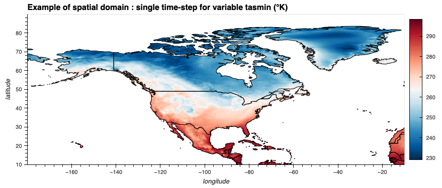

ECMWF ERA5-Land and ERA5
Summary Description
ERA5-Land is a high-resolution global land surface reanalysis dataset produced by the European Centre for Medium-Range Weather Forecasts (ECMWF). ERA5-Land is a replay of the land component of the ERA5 climate reanalysis, forced by meteorological fields from ERA5, but at higher resolution. No data assimilation is used in the production of the dataset, but the observations indirectly influence the simulation through the atmospheric forcing of ERA5. The dataset provides historical climate data of land surface variables at high horizontal (9 km) and temporal resolution (hourly) over an extended time period (1950-present). ERA5-Land was designed to support hydrological studies and diverse surface applications dealing with water resource, land, and environmental management.

Dataset Characteristics
- Current version: Based on ERA5 the dataset is operationally updated daily.
- Available variables: temperature, precipitation, wind, humidity, radiation, snow, surface pressure, evapotranspiration, soil water content, and more (see variables section below)
- Temporal coverage: 1950 to present
- Temporal resolution: Hourly and daily
- Spatial coverage: Global land area
- Spatial resolution: ~9 km grid spacing (0.1˚)
- Data type: ECMWF land surface model forced by ERA5 atmospheric conditions
- Data format: netCDF, GRIB, Zarr, CSV, depending on data access portal.
- Web references:
ERA5-Land on ECMWF web site,
ERA5-Land data documentation,
ERA5-Land on Copernicus Climate Change Service (C3S) Climate Data Store (CDS),
ERA5-Land data descriptions are provided on the Northern Climate Data Report and Inventory (NCDRI) Web Site for temperature, precipitation, 10m wind, snow and runoff. - Reference:
Muñoz-Sabater et al. (2021) - Contact: ECMWF Support Portal
When to use ERA5-Land and ERA5
- When you need information about the past, or data that are updated on a continuous basis.
- When you need spatial completeness.
- When you need variables not consistently available from stations (e.g. radiation, near-surface winds).
- When you need data at hourly timescale.
- When you need data about the middle and upper atmosphere.
- When you need data outside of North America.
Strengths and Limitations
Key Strengths of ERA5-Land
| Strength | Description |
|---|---|
| High spatial resolution | 0.1° x 0.1°; Native resolution is roughly 9 km x 9 km. |
| Long-term consist data | Extends back to 1950, enabling long-term climate studies and trend analysis (with caution). |
| Data timeliness | The product is updated in near real time on a daily basis. |
| Hourly data availability | Supports high-frequency climate and hydrological applications. |
Limitations of ERA5-Land
| Limitation | Description |
|---|---|
| Precipitation uncertainties | ERA5-Land does not assimilate precipitation observations but interpolates precipitation which was generated by the ERA5 reanalysis. |
| Limited ocean representation | Focuses on land, no data is available over oceans. |
| No assimilation of land observations | Many surface variables (e.g. soil moisture, snow depth) are strongly model-driven and only indirectly constrained by observations. This introduces structural uncertainty that can be difficult to quantify. |
| Wind data only at 10 m height | Wind data are only provided at 10m. However, 100 m data aree available from ERA5. |
| Coastal regions poorly resolved | Due to the coarser resolution of the input dataset ERA5 coastal areas may not be covered by ERA5-Land. For example Les Îles de la Madeleine in the Golf of St Lawrence are not represented. |
Expert Guidance
Variables available in ERA5-Land
For details click on variable group to uncollapse
Data Access
ERA5-Land hourly data from 1950 to present are available on the Copernicus Data Store. ECMWF has a web site with instructions to download ERA5-Land. Hourly and daily temperature and precipitation data from ERA5-Land over North America are available on PAVICS.
To avoid downloading very large datasets in their entirety PAVICS allows partial/regional extraction and provides a tutorial to do so, using the CaSR reanalysis as an example . With a free PAVICS user account, the Jupyter notebook with the Python code in the tutorial can be directly used on PAVICS.
ERA5 data can be obtained from the Copernicus web site.